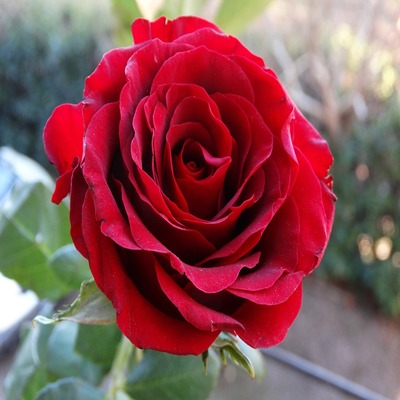

rose
Rose, (genus Rosa), genus of some 100 species of perennial shrubs in the rose family (Rosaceae).
Roses are native primarily to the temperate regions of the Northern Hemisphere.
Many roses are cultivated for their beautiful flowers, which range in colour from white through various tones of yellow and pink to dark crimson and maroon, and most have a delightful fragrance, which varies according to the variety and to climatic conditions.
Roses are erect, climbing, or trailing shrubs, the stems of which are usually copiously armed with prickles of various shapes and sizes, commonly called thorns.
The leaves are alternate and pinnately compound (i.e., feather-formed), usually with oval leaflets that are sharply toothed.
The flowers of wild roses usually have five petals, whereas the flowers of cultivated roses are often double (i.e., with multiple sets of petals).
Rose flowers’ size ranges from tiny miniatures 1.25 cm (0.5 inch) in diameter to hybrid flowers measuring more than 17.5 cm (7 inches) across.
The rose plant’s fleshy, sometimes edible, berrylike “fruit” (actually the floral cup) is known as a hip and usually ranges from red to orange in colour.
Roses can become infected by a number of diseases, most of them caused by fungi. Powdery mildew appears as a grayish white moldlike growth on the surface of young leaves and stems.
Black spot fungus appears as conspicuous black spots on leaves and causes them to fall off. Rust is also a common disease of roses. Aphids are a common insect pest on the leaves and young stems.